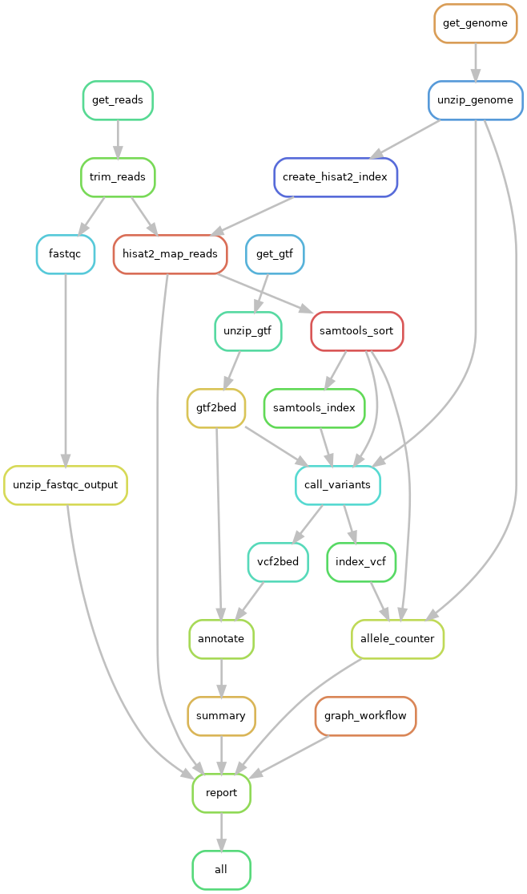

Workflow¶

"""
rules.snk
chris cowled 16.08.2018
snakemake -nps workflow.snk
"""
import os
import pathlib
import pandas as pd
filter_params = {
'minCoverage': 30,
'minFoldChange': 1.75,
'minSnps': 3,
}
BASEDIR = workflow.basedir # this is full path to the snakefile itself
ENVDIR = '%s/../envs' % BASEDIR
DATADIR = '%s/../data' % BASEDIR
headers = ['sample', 'tissue', 'sex', 'age', 'region', 'country']
metadata = pd.read_csv("%s/buffalo_sample_metadata.csv" % DATADIR, header=None, names=headers, index_col=0)
accessions = pd.read_csv("%s/ERA1230280.csv" % DATADIR)
url_index = dict(zip(
accessions['run_accession'],
accessions['fastq_ftp'],
)
)
run2sampleACC = dict(zip(
accessions['run_accession'],
accessions['secondary_sample_accession'],
)
)
target_list = [s.strip() for s in open('%s/targets.txt' % os.getcwd(), 'r').read().split('\n')]
file_list = ["reports/%s.html" % s for s in target_list if s]
file_list = [s for s in file_list if not s[0] == '#']
rule all:
input:
file_list
run:
for file_path in {input}:
if 'simulation' in file_path:
sample_id = file_path.split('reports/')[1].split('.html')[0]
print('testing out the function', file_path, sample_id)
metadata[sample_id] = pd.Series([sample_id, 'simulation','simulation','simulation','simulation','simulation'])
run2sampleACC[sample_id] = sample_id
url_index[sample_id] = ';'.join([sample_id, sample_id])
rule get_reads:
output:
"reads/{sample}.1.fastq.gz",
"reads/{sample}.2.fastq.gz"
run:
#run_acc = sample2runACC[list({wildcards.sample})[0]]
run_acc = list({wildcards.sample})[0]
reads = url_index[run_acc].split(';')
shell("""
wget --tries=4 -O {output[0]} {reads[0]}
wget --tries=4 -O {output[1]} {reads[1]}
""")
url="ftp://ftp.ncbi.nlm.nih.gov/genomes/all/GCF/003/121/395/GCF_003121395.1_UOA_WB_1"
rule get_genome:
output:
"genome/water_buffalo_genome.fasta.gz"
shell:
"wget --tries=4 -O {output} {url}/GCF_003121395.1_UOA_WB_1_genomic.fna.gz"
rule get_gtf:
output:
"genome/water_buffalo_genome.gtf.gz"
shell:
"wget --tries=4 -O {output} {url}/GCF_003121395.1_UOA_WB_1_genomic.gff.gz"
rule unzip_genome:
input:
"genome/water_buffalo_genome.fasta.gz"
output:
"genome/water_buffalo_genome.fasta"
shell:
"gunzip -c {input} > {output}"
rule unzip_gtf:
input:
"genome/water_buffalo_genome.gtf.gz"
output:
"genome/water_buffalo_genome.gtf"
shell:
"gunzip -c {input} > {output}"
rule trim_reads:
input:
["reads/{sample}.1.fastq.gz", "reads/{sample}.2.fastq.gz"]
output:
"trimmed/{sample}.1_val_1.fq.gz",
"trimmed/{sample}.1.fastq.gz_trimming_report.txt",
"trimmed/{sample}.2_val_2.fq.gz",
"trimmed/{sample}.2.fastq.gz_trimming_report.txt"
params:
extra="--quality 20 --stringency 2 --length 30 --trim-n" # NOTE: --paired is already included in the wrapper script
log:
"logs/trim_galore/{sample}.log"
wrapper:
"0.27.1/bio/trim_galore/pe"
rule fastqc:
input:
"trimmed/{sample}.fq.gz",
output:
html="fastqc/{sample}.html",
zip="fastqc/{sample}.zip"
params:
""
log:
"logs/fastqc/{sample}.log"
wrapper:
"0.27.1/bio/fastqc"
rule unzip_fastqc_output:
input:
"fastqc/{sample}.1_val_1.zip",
"fastqc/{sample}.2_val_2.zip"
output:
"fastqc/{sample}.1_val_1_fastqc/Images/per_base_quality.png",
"fastqc/{sample}.2_val_2_fastqc/Images/per_base_quality.png",
"graphics/{sample}.1.per_base_quality.png",
"graphics/{sample}.2.per_base_quality.png"
shell:
"""
unzip -q -u -d fastqc {input[0]}
unzip -q -u -d fastqc {input[1]}
cp {output[0]} {output[2]}
cp {output[1]} {output[3]}
"""
rule create_hisat2_index:
input:
"genome/water_buffalo_genome.fasta"
output:
expand("UOA_WB_1.{int}.ht2", int=[1,2,3,4,5,6,7,8])
conda:
"%s/hisat2.yaml" % ENVDIR
threads:
8
shell:
"hisat2-build -p {threads} {input} UOA_WB_1"
rule hisat2_map_reads:
input:
reads=["trimmed/{sample}.1_val_1.fq.gz", "trimmed/{sample}.2_val_2.fq.gz"],
index=expand("UOA_WB_1.{int}.ht2", int=[1,2,3,4,5,6,7,8])
output:
"mapped/{sample}.bam"
log: # optional
"logs/hisat2/{sample}.log"
params: # idx is required, extra is optional
idx="UOA_WB_1"
# extra="-k 1" # suppress multimapping reads
threads:
8 # optional, defaults to 1
conda:
"%s/hisat2.yaml" % ENVDIR
wrapper:
"0.27.1/bio/hisat2"
rule samtools_sort:
input:
"mapped/{sample}.bam"
output:
"sorted/{sample}.bam"
conda:
"%s/samtools.yaml" % ENVDIR
shell:
"samtools sort -o {output} {input}"
rule samtools_index:
input:
"sorted/{sample}.bam"
output:
"sorted/{sample}.bam.bai"
conda:
"%s/samtools.yaml" % ENVDIR
shell:
"samtools index {input}"
rule gtf2bed:
input:
script="%s/convert2bed.py" % BASEDIR,
gtf="genome/{sample}.gtf"
output:
bed="genome/{sample}.bed",
sorted="genome/{sample}.sorted",
merged="genome/{sample}.merged.bed", # for use with bedtools
renamed="genome/{sample}.merged.bed.txt" # for use with bcftools mpileup
conda:
"%s/gtf2bed.yaml" % ENVDIR
shell:
"""
python {input.script} {input.gtf}
bedtools sort -i {output.bed} > {output.sorted}
bedtools merge -i {output.sorted} -c 4,5,6 -o distinct > {output.merged}
cp {output.merged} {output.renamed}
"""
rule call_variants:
input:
genome="genome/water_buffalo_genome.fasta",
bed="genome/water_buffalo_genome.merged.bed.txt", # must not end in .bed
bam="sorted/{sample}.bam",
bai="sorted/{sample}.bam.bai"
output:
"variation/{sample}.vcf"
log:
"logs/bcftools/{sample}.log"
threads:
8
conda:
"%s/bcftools.yaml" % ENVDIR
shell:
"""
bcftools mpileup --output-type u \
--skip-indels \
--threads {threads} \
--fasta-ref {input.genome} \
--regions-file {input.bed} \
{input.bam} \
| bcftools call --output-type v \
--threads {threads} \
--consensus-caller \
--variants-only \
--output {output}
"""
rule index_vcf:
input:
"variation/{sample}.vcf"
output:
"variation/{sample}.vcf.gz",
"variation/{sample}.vcf.gz.tbi"
conda:
"%s/samtools.yaml" % ENVDIR
shell:
"""
bgzip -c {input} > {output[0]}
tabix -p vcf {output[0]}
"""
rule allele_counter:
input:
script="%s/../allelecounter/allelecounter.py" % BASEDIR,
vcf="variation/{sample}.vcf.gz",
index="variation/{sample}.vcf.gz.tbi",
bam="sorted/{sample}.bam",
genome="genome/water_buffalo_genome.fasta"
output:
csv="expression/{sample}.csv"
conda:
"%s/allelecounter.yaml" % ENVDIR
shell:
"""
python {input.script} --vcf {input.vcf} \
--sample {input.bam} \
--bam {input.bam} \
--ref {input.genome} \
--min_cov 10 \
--min_baseq 16 \
--min_mapq 35 \
--o {output.csv}
"""
rule vcf2bed:
input:
script="%s/convert2bed.py" % BASEDIR,
vcf="variation/{sample}.vcf"
output:
bed="variation/{sample}.bed",
merged="variation/{sample}.merged.bed"
conda:
"%s/bcftools.yaml" % ENVDIR
shell:
"""
python {input.script} {input.vcf}
sort {output.bed} | uniq > {output.merged}
"""
rule csv2bed:
input:
script="%s/convert2bed.py" % BASEDIR,
csv="expression/{sample}.csv"
output:
"expression/{sample}.bed"
conda:
"%s/bcftools.yaml" % ENVDIR
shell:
"python {input.script} {input.csv}"
rule annotate:
input:
snps="variation/{sample}.merged.bed",
annotation="genome/water_buffalo_genome.merged.bed" # must end in .bed (created by gtf2bed_modified)
output:
"merged/{sample}.merged.csv"
conda:
"%s/gtf2bed.yaml" % ENVDIR
shell:
"bedtools intersect -a {input.snps} -b {input.annotation} -wa -wb > {output}"
rule summary:
input:
script="%s/genewiseMAFC.py" % BASEDIR,
data="merged/{sample}.merged.csv"
output:
"results/{sample}.summary.csv"
conda:
"%s/bcftools.yaml" % ENVDIR
params:
minCoverage=filter_params['minCoverage'],
minFoldChange=filter_params['minFoldChange'],
minSnps=filter_params['minSnps']
shell:
"""
python {input.script} --input {input.data} \
--output {output} \
--minCoverage {params.minCoverage} \
--minFoldChange {params.minFoldChange} \
--minSnps {params.minSnps}
"""
rule graph_workflow:
input:
"%s/workflow.snk" % BASEDIR
output:
"graphics/rulegraph.png"
conda:
"%s/graphviz.yaml" % ENVDIR
shell:
"snakemake -s {input} --rulegraph 2> /dev/null | dot -T png > {output}"
rule report:
input:
fq1="graphics/{sample}.1.per_base_quality.png",
fq2="graphics/{sample}.2.per_base_quality.png",
exp="expression/{sample}.csv",
res="results/{sample}.summary.csv",
mapping_log = "logs/hisat2/{sample}.log",
graph="graphics/rulegraph.png"
output:
"reports/{sample}.html"
run:
from snakemake.utils import report as html_report
import maketable
import datetime
date = datetime.datetime.today().strftime('%Y-%m-%d')
with open(input.exp) as counts:
n_counts = sum(1 for l in counts if not l.startswith("#")) - 1
with open(input.res) as genes:
n_genes = sum(1 for l in genes if not l.startswith("#")) - 1
with open(input.mapping_log) as m:
mapping_stats = m.read().replace('----', '')
mapping_stats = '\n'.join([' - '+line.strip() for line in mapping_stats.split('\n')]) # left align, add 4 space indent + list bullet
run_acc = list({wildcards.sample})[0]
if 'simulation' in run_acc:
sample_acc = run_acc
reads = ['simulation', 'simulation']
meta_values = [sample_acc] + ['simulation']*5
sim_metadata = pd.Series(dict(zip(headers, meta_values)))
metadata_table = maketable.make_table_from_df(sim_metadata)
else:
sample_acc = run2sampleACC[run_acc]
reads = url_index[run_acc].split(';')
metadata_table = maketable.make_table_from_df(metadata.loc[sample_acc,])
url_1 = reads[0]
url_2 = reads[1]
results_table = maketable.make_table_from_csv(input.res, sep='\t')
filters = maketable.make_table_from_df(pd.Series(filter_params))
#filters = str(filter_params)
html_report("""
==========================================================
A workflow for performing allele specific expression (ASE)
==========================================================
Run accession::
{run_acc}
Sample accession::
{sample_acc}
Reads_1 source::
{url_1}
Reads_2 source::
{url_2}
Metadata:
{metadata_table}
Filters:
{filters}
Mapping results:
{mapping_stats}
Summary:
- Reads were trimmed with Trimgalore
- Reads were mapped to the buffalo genome with hisat2
- variants were called with BCFtools
- counts were determined by allelecounter.py
- python scripts were used for the other steps
- This resulted in {n_counts} snps (see Table exp_)
- This resulted in {n_genes} genes (see Table res_)
Results:
{results_table}
Reads_1:
.. image:: {input.fq1}
Reads_2:
.. image:: {input.fq2}
Workflow:
.. image:: {input.graph}
""", output[0], metadata="Author: Chris Cowled (chris.cowled@csiro.au)", **input)